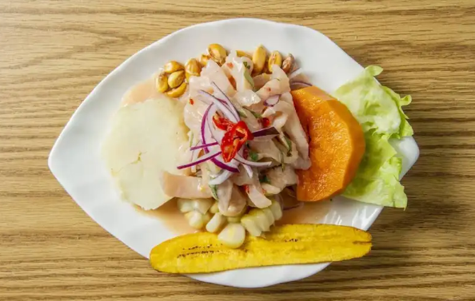
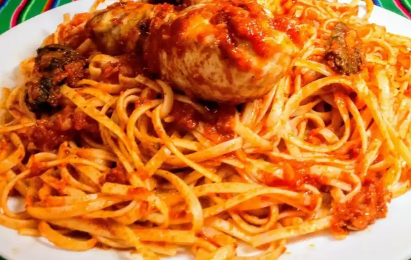
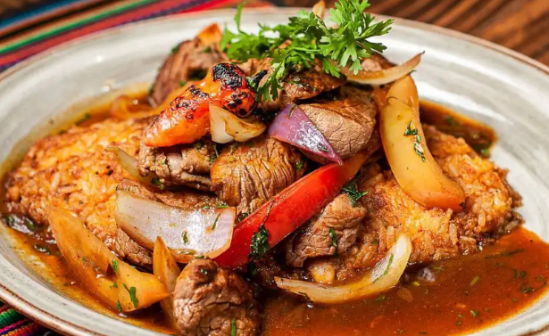

Receta para preparar ceviche de pescado con ají limo de la forma más fácil y en casa

Receta para preparar tallarines rojos con pollo de la forma más fácil y en casa

Receta para preparar tacu tacu con lomo saltado